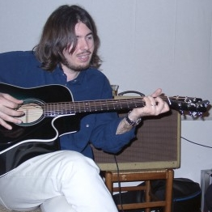
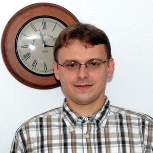

Federico Marini

school University of
Rome, Italy
mic
Advanced chemometric approaches for the analysis of spectroscopic data
Axel Mosig
school Ruhr-University
Bochum,Germany
mic
Deep Learning for Label Free Digital Pathology: From Convolutional Neural Networks to Learning Representations
Thomas Bocklitz
 school Institute of
Physical Chemistry, Germany
mic
Machine Learning and Chemometrics for the analysis of Raman related data
school Institute of
Physical Chemistry, Germany
mic
Machine Learning and Chemometrics for the analysis of Raman related data
Harald Martens
 school NTNU, Norway
mic
Measurements and Models in Bio spectroscopy: An Integrative Perspective
school NTNU, Norway
mic
Measurements and Models in Bio spectroscopy: An Integrative Perspective
Raffaele Vitale
school KU Leuven,
Belgium
mic
Identification of microbial species by single molecule fluorescence microscopy of DNA sequences and
statistical data analysis
Edoardo Saccenti
 school Wageningen,
Netherlands
mic
Bias and estimation of the correlation coefficient in presence of different types of measurement error
school Wageningen,
Netherlands
mic
Bias and estimation of the correlation coefficient in presence of different types of measurement error
Petr Nazarov

school Luxembourg
Institute of Health
mic
Deconvolution of mixed transcriptomes improves characterization of cancer patients
Marko Toplak
school University
of Ljubljana
mic
Friendly data analysis with Orange/Quasar: from raw spectral data to predictions


 Vassili Kovalev
Vassili Kovalev  Ferenc Borondics
Ferenc Borondics  David Mayerich
David Mayerich  Volha Shapaval
Volha Shapaval  Valeria Tafintseva
Valeria Tafintseva  Hugh J. Byrne
Hugh J. Byrne  Boris Mizaikoff
Boris Mizaikoff  Victor Skakun
Victor Skakun  Darya Dubava
Darya Dubava